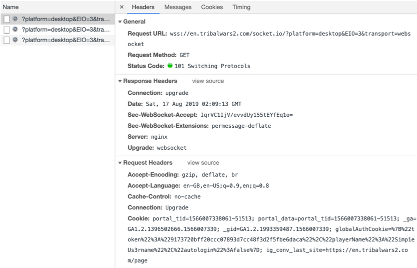
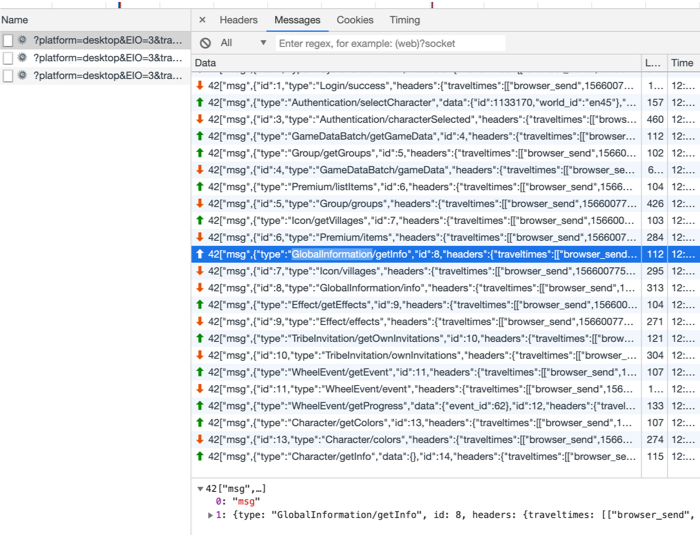
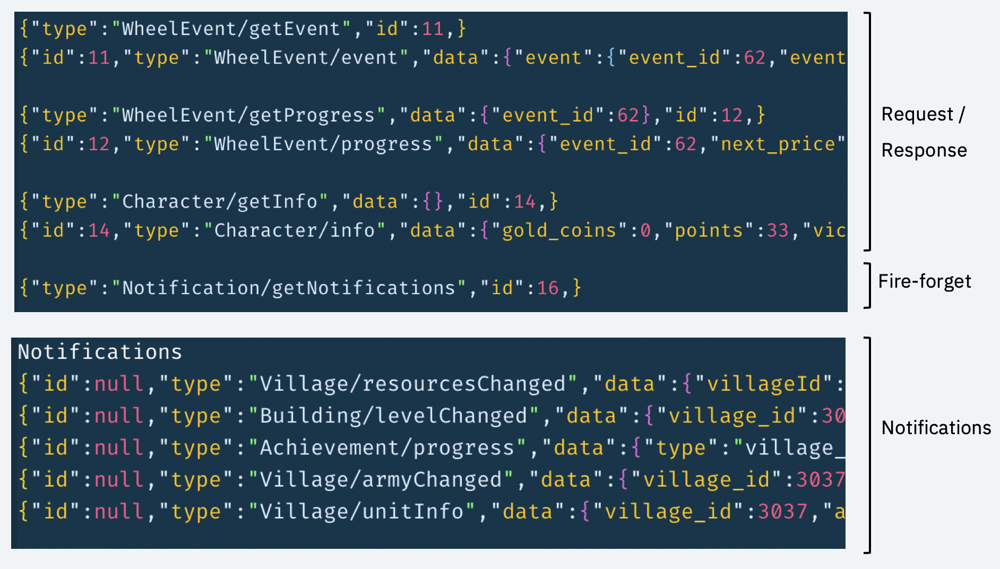

How Toddler plays
Back when I first started looking into making the manager (like 4 years ago), looking through Github’s projects on automating Tribal Wars 2, I found most, if not all, of the projects relies on automating the browser instead of utilising the the game’s WebSocket connection. Therefore, I think it’s worthwhile to capture the essence of how the game client talks to the game server. Hopefully, this blog post may be helpful to those looking to automate this game.
When Tribal Wars 2 website is loaded, a websocket is connected using Socket.io 2.0.

Messages sent between the game client (browser or mobile) and server includes metadata from Socket.io 2.0 library and looks something like the screenshot below. In the screenshot shown, green arrows denote messages sent to the server from the browser, and red arrows denote messages received from the server.

There are 3 types of messages that are sent between the game server and the client:
- Request/response messages. As an example, the highlighted line in the picture above is requesting for global world’s information
GlobalInformation/getInfo. The request has anidof 8. A few lines after this line, another message withid8 is sent from the server to the client with typeGlobalInformation/info. This is the response for thegetrequest. - Fire-forget message from the client to the server. The most notable and only example of this is when the client requests server for future notifications.
- Notifications from the server to the client. These messages are special in which the
idof the message isnull.

The screenshot above shows the cleaned version of different types of messages. 42["msg", portion and "headers" portion is removed from the message above.
You can visit this Gist to look at what some captured messages look like, and examples of report JSONs.
For a Javascript example of how the authentication sequence work, have a look at the toddler-auth project.